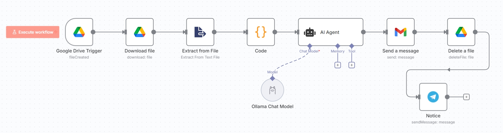

Line 對話紀錄地端 AI 自動摘要
從散亂的對話到結構化的每日報告，實現全自動監控、使用地端 AI 摘要、郵件派送的智慧工作流，確保資料絕不外洩。
The Challenge
「Line 群組訊息量大且雜亂，人工整理每日摘要耗時費力（每天 30-60 分鐘），且容易遺漏關鍵決策或待辦事項。」
The Solution
「構建一個 n8n 自動化工作流，監控 Google Drive 中的對話紀錄，並串接地端 AI 模型 (Ollama) 進行摘要生成。這不僅實現了全自動化的日報產出，更確保了敏感對話資料絕不外洩。」
專案緣起：混亂的群組對話地獄
在快節奏的專案中，LINE 群組是快速溝通的利器，但也是資訊的黑洞。無數個群組，每天數百則訊息，涵蓋了決策、問題、待辦事項，如果沒有專人整理，重要資訊很快就會被淹沒。
手動整理耗時費力，且容易出錯。人工處理每天至少要花 30-60 分鐘回顧、複製、貼上重點，才能整理出一份勉強可讀的日報。這個過程不僅枯燥，也佔用了處理更重要事務的時間。
為了解決這個痛點，我利用 n8n 和大型語言模型（LLM）打造了這個自動化工作流，目標是：
- 低人工介入： 只要上傳對話紀錄到雲端硬碟，從檔案監控到郵件寄送，全程自動化。
- 高品質摘要： AI 自動提煉重點、整理待辦事項，產出結構化報告並發送郵件。
- 即時性： 檔案上傳後，流程自動觸發，確保資訊傳遞的及時性。
這個工作流不僅解決了單一專案的問題，更能輕易地複製到任何需要整理對話紀錄的團隊，最大化溝通效率。
資安壁壘：透過地端 AI 確保資料隱私與在地化理解
如果將包含敏感資訊的對話紀錄傳送給外部 LLM 服務，存在著隱私外洩的風險。為了解決此問題，這個工作流改為串接在本地運行的 Ollama，並特別選用聯發科優化的 Breeze-7B 模型。它更能理解台灣的在地用語和溝通情境，讓摘要結果更精準、更貼近真實對話的原意。
這代表所有的 AI 運算都在您自己的機器上完成，對話紀錄不會餵給外部 AI。這不僅解決了隱私問題，也讓此解決方案能真正應用於處理機密資訊的商業環境中。
理念核心：一個監控、處理、本地生成、派送的隱私安全閉環
此 n8n 工作流的核心思想是「監控、處理、生成、派送」，並將最關鍵的「生成」步驟保留在本地端，將繁瑣的文書工作轉化為一個兼具效率與安全性的自動化系統。
- 雲端監控 (Google Drive Trigger): 工作流的起點是一個 Google Drive 觸發器。它會持續監控指定的雲端資料夾，一旦有新的 Line 對話紀錄（.txt 檔案）被上傳，便立即啟動整個流程。
- 檔案處理 (Download & Extract): 觸發後，工作流會自動下載該文字檔，並從中提取純文字內容，為後續的 AI 分析做準備。
- 智慧預處理 (Code Node): 為了讓 AI 能更精準地摘要，這個節點扮演了關鍵角色。它會讀取對話紀錄，自動找出最近的日期，並往前抓取三天的對話內容。這確保了 AI 摘要的範圍是最新且相關的，避免了不必要的資訊干擾。
- 地端 AI 核心 (AI Agent + Ollama): 這是工作流的大腦，也是資安防護的重點。預處理後的文字被送到一個 AI Agent，但其背後連接的不再是雲端 LLM，而是在本地運行的 Ollama Chat Model。透過精心設計的 Prompt，我們指示 AI 扮演一位「專業的專案助理」，在確保資料不出本地網路的前提下，將對話紀錄整理成包含【本日重點摘要】、【本日待辦事項】和【對話事項】的 HTML 格式報告。
- 郵件派送 (Gmail Node): AI 生成精美的 HTML 報告後，此節點會自動將其作為郵件內容，寄送給預設的收件人列表（如專案經理、團隊主管等）。
- 檔案刪除 (Delete File): 為確保對話檔案不被保留，郵件成功寄出後，工作流會將原始的對話紀錄檔案從雲端刪除，完成整個閉環。
- 即時通知 (Telegram Node): 流程成功結束或發生任何錯誤時，都會透過 Telegram 發送通知給我，確保我能隨時掌握系統的運行狀態。
工作流展示
點擊下方頁籤，查看此工作流的實際運行示意：
n8n 整體工作流 (Ollama 地端模型版本)
從監控 Google Drive、下載檔案、透過 Ollama 在本地進行 AI 摘要、寄送 Gmail，到最後的檔案刪除與通知，所有步驟清晰可見，且 AI 處理全都在本地完成。
輸入源：Line 對話紀錄 (.txt)
使用者只需將從 Line 匯出的純文字對話紀錄上傳到指定的 Google Drive 資料夾即可。

產出成果：結構化的 HTML 郵件
AI 自動將雜亂的對話整理成專業、易讀的日報，包含重點摘要與待辦事項，直接寄送到你的信箱。(已用假資料取代)

從 0 到 1：建立你的地端 AI 對話摘要工作流
本教學將引導你完成這個 n8n 工作流的關鍵步驟。你需要 n8n 環境、在本機安裝並運行 Ollama，並準備好 Google Drive、Gmail 的 API 權限。
設定一個監聽 Google Drive 新檔案的觸發器。
- 在 n8n 畫布中，新增一個 Google Drive Trigger 節點。
- 在 Authentication 中連結你的 Google 帳號。
- 將 Event 設定為 File Created。
- 在 Folder to Watch 中，選擇你要監控的 Google Drive 資料夾。
目的是取得檔案的純文字內容。
- 新增一個 Google Drive 節點，Operation 選擇 Download，並從上一步獲取 File ID。
- 接著，新增一個 Extract from File 節點，它會自動讀取前一個節點下載的檔案內容並提取純文字。
用程式碼篩選出近三日的對話，讓 AI 更專注於最新內容。
- 新增一個 Code 節點。
- 貼入篩選日期的 JavaScript 程式碼。
// 程式碼目的是找出最近日期並往前抓取三天對話
const rawText = $input.item.json.data;
// ... (其餘程式碼省略，直接請 AI 生成就好。)
return [{ json: { processedText: outputLines.join('
') } }];
這是本工作流的核心。我們將用 Ollama Chat Model 來驅動 AI Agent，確保資料的私密性。
事前準備：請先在您的電腦或伺服器上安裝 Ollama，並透過指令
ollama pull ycchen/breeze-7b-instruct-v1_0 下載我們將要使用的繁體中文優化模型。
- 新增一個 AI Agent 節點。
- 新增一個 Ollama Chat Model 節點，並將其連接到 AI Agent 的 "Language Model" 輸入端。
- 在 Ollama 節點中，設定 Base URL (通常是
http://localhost:11434) 並在 Model 欄位填入ycchen/breeze-7b-instruct-v1_0:latest。 - 在 AI Agent 節點中，將 Input 設定為上一步 Code 節點輸出的
processedText。 - 在 Prompt 區域，貼入與舊版相同的指令即可。AI 的角色、任務、規則和輸出格式定義保持不變。
角色： 你是一位專業的 IT 專案助理...
任務： 根據下方提供的 [對話紀錄]...
...
[對話紀錄]
{{ $input.item.json.processedText }}
現在，AI 的所有思考與生成過程都會在你的本地機器上完成！
將 AI 在本地生成的報告寄出。
- 新增一個 Gmail 節點，設定 API 憑證。
- 設定收件人、主旨。
- 在 Message 欄位，使用表達式
={{ $json.output }}來引用 AI Agent 節點生成的 HTML 內容。
完成最後的整理與監控工作。
- 新增 Google Drive 節點將處理完的檔案刪除。
- (可選) 新增 Telegram 節點，用於發送成功或失敗的通知。
成果與反思：讓 AI 成為你的專屬、安全的助理
這個專案的價值在於將先進的 AI 技術以安全、私密的方式應用於解決日常的繁瑣工作。
-
確保絕對的資料隱私 透過整合 Ollama，所有語意處理都在本地完成，敏感的對話紀錄無需上傳外部 AI，徹底解決了資料外洩的風險。
-
釋放高價值人力 從將近半小時的整理工作中解放，更能專注於溝通、決策等更具價值的事務。
-
提升資訊品質 AI 能客觀、一致地提煉重點與待辦事項，避免人工整理時可能出現的遺漏或偏見，產出標準化的高品質報告。
-
可擴展的自動化框架 此工作流的模組化設計使其極易擴展。未來可以輕易接入 Notion、Slack 等其他平台，或替換不同的本地 AI 模型。